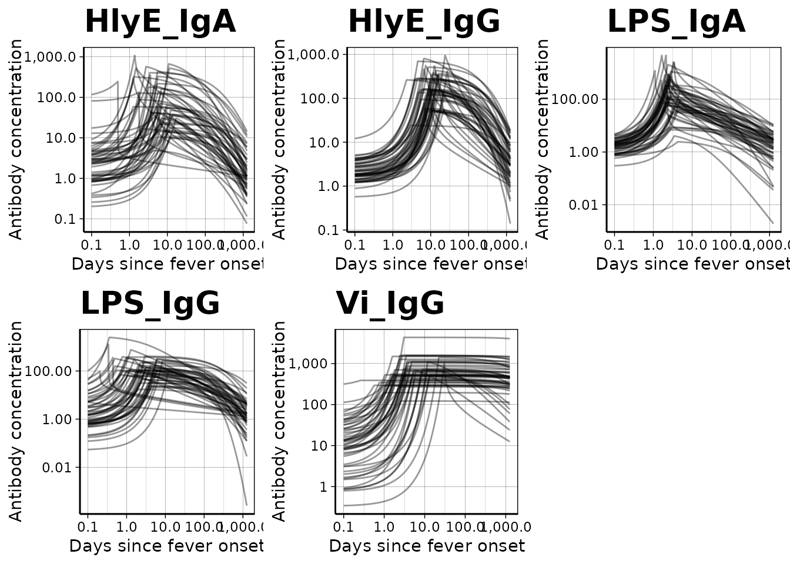
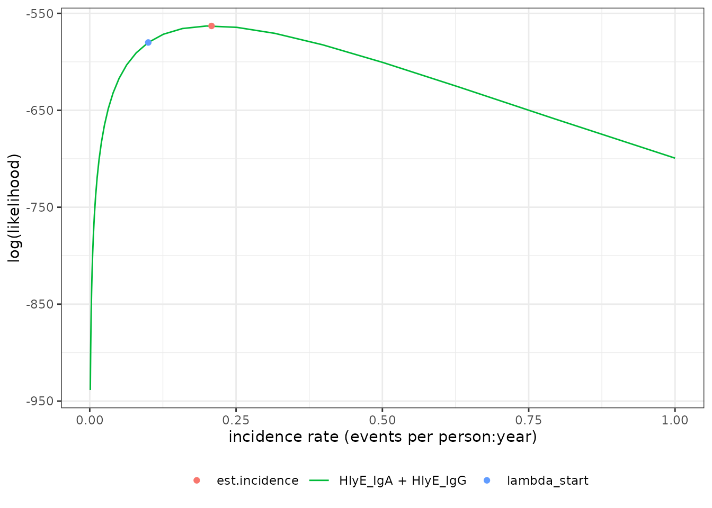
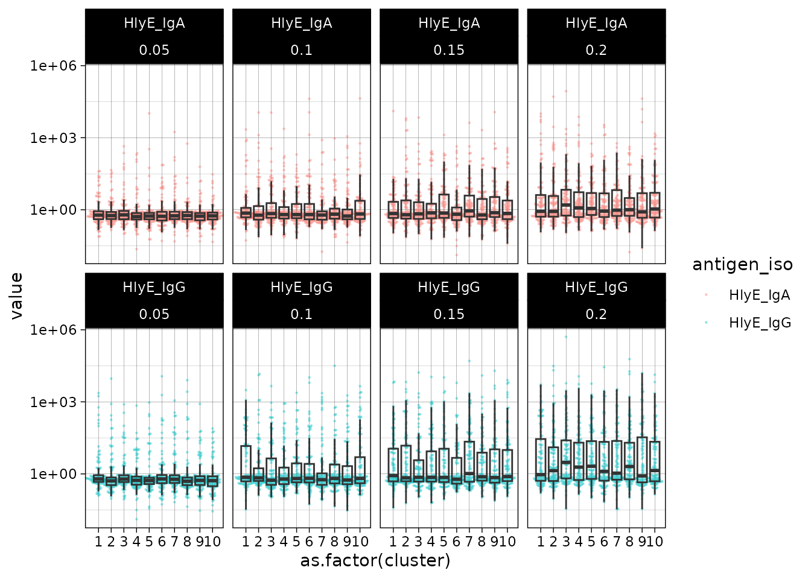

Generate a simulated cross-sectional sample and estimate seroincidence
Enteric Fever using HlyE IgG and/or HlyE IgA
Source:vignettes/articles/simulate_xsectionalData.Rmd
simulate_xsectionalData.RmdThis vignette shows how to simulate a cross-sectional sample of
seroresponses for incident infections as a Poisson process with
frequency lambda. Responses are generated for the
antibodies given in the antigen_isos argument.
Age range of the simulated cross-sectional record is
lifespan.
The size of the sample is nrep.
Each individual is simulated separately, but different antibodies are modelled jointly.
Longitudinal parameters are calculated for an age:
age.fx (fixed age). However, when age.fx is
set to NA then the age at infection is used.
The boolean renew.params determines whether each
infection uses a new set of longitudinal parameters, sampled at random
from the posterior predictive output of the longitudinal model. If set
to FALSE a parameter set is chosen at birth and kept, but:
1. the baseline antibody levels (y0) are updated with the
simulated level (just) prior to infection, and 2. when
is.na(age.fx) then the selected parameter sample is updated
for the age when infection occurs.
There is also a variable n.mc: when n.mc==0
then a random MC sample is chosen out of the posterior set (1:4000).
When n.mc is given a value in 1:4000 then the chosen number
is fixed and reused in any subsequent infection. This is for diagnostic
purposes.
Simulate a single dataset
load model parameters
library(serocalculator)
library(tidyverse)
#> ── Attaching core tidyverse packages ──────────────────────── tidyverse 2.0.0 ──
#> ✔ dplyr 1.1.4 ✔ readr 2.1.5
#> ✔ forcats 1.0.0 ✔ stringr 1.5.1
#> ✔ ggplot2 3.5.0 ✔ tibble 3.2.1
#> ✔ lubridate 1.9.3 ✔ tidyr 1.3.1
#> ✔ purrr 1.0.2
#> ── Conflicts ────────────────────────────────────────── tidyverse_conflicts() ──
#> ✖ dplyr::filter() masks stats::filter()
#> ✖ dplyr::lag() masks stats::lag()
#> ℹ Use the conflicted package (<http://conflicted.r-lib.org/>) to force all conflicts to become errors
library(ggbeeswarm) # for plotting
#load in longitudinal parameters, these are modeled from all SEES cases across all ages and countries
dmcmc =
"https://osf.io/download/rtw5k" %>%
load_curve_params()visualize antibody decay model
We can graph individual MCMC samples from the posterior distribution
of model parameters using a autoplot.curve_params() method
for the autoplot() function:

We can use a logarithmic scale for the x-axis if desired:

We can graph the median, 10%, and 90% quantiles of the model using
the graph.curve.params() function:
# Specify the antibody-isotype responses to include in analyses
antibodies = c("HlyE_IgA", "HlyE_IgG")
dmcmc %>%
graph.curve.params(antigen_isos = antibodies) %>%
print()
#> Warning: Removed 57 rows containing missing values or values outside the scale range
#> (`geom_line()`).
Simulate cross-sectional data
#set seed to reproduce results
set.seed(54321)
# simulated incidence rate per person-year
lambda <- 0.2;
# range covered in simulations
lifespan <- c(0, 10);
# cross-sectional sample size
nrep <- 100
# biologic noise distribution
dlims <- rbind(
"HlyE_IgA" = c(min = 0, max = 0.5),
"HlyE_IgG" = c(min = 0, max = 0.5))
#generate cross-sectional data
csdata <- sim.cs(
curve_params = dmcmc,
lambda = lambda,
n.smpl = nrep,
age.rng = lifespan,
antigen_isos = antibodies,
n.mc = 0,
renew.params = TRUE,
add.noise = TRUE,
noise_limits = dlims,
format = "long"
)Noise parameters
We need to provide noise parameters for the analysis; here, we define them directly in our code:
Visualize data
We can plot the distribution of the antibody responses in the simulated data.
ggplot(csdata, aes(x=as.factor(antigen_iso), y= value)) +
geom_beeswarm(size= .2, alpha = .3, aes(color = antigen_iso), show.legend = F) +
geom_boxplot(outlier.colour = NA, fill = NA) +
scale_y_log10() +
theme_linedraw() +
labs(x="antigen - isotype")
calculate log-likelihood
We can calculate the log-likelihood of the data as a function of the incidence rate directly:
ll_A = llik(
pop_data = csdata,
curve_params = dmcmc,
noise_params = cond,
antigen_isos = "HlyE_IgA",
lambda = 0.1) %>% print()
#> [1] -226.1281
ll_G = llik(
pop_data = csdata,
curve_params = dmcmc,
noise_params = cond,
antigen_isos = "HlyE_IgG",
lambda = 0.1) %>% print()
#> [1] -327.432
ll_AG = llik(
pop_data = csdata,
curve_params = dmcmc,
noise_params = cond,
antigen_isos = c("HlyE_IgG","HlyE_IgA"),
lambda = 0.1) %>% print()
#> [1] -553.5601
print(ll_A + ll_G)
#> [1] -553.5601graph log-likelihood
We can also graph the log-likelihoods, even without finding the MLEs,
using graph.loglik():
lik_HlyE_IgA = graph.loglik(
pop_data = csdata,
curve_params = dmcmc,
noise_params = cond,
antigen_isos = "HlyE_IgA",
log_x = TRUE
)
lik_HlyE_IgG = graph.loglik(
previous_plot = lik_HlyE_IgA,
pop_data = csdata,
curve_params = dmcmc,
noise_params = cond,
antigen_isos = "HlyE_IgG",
log_x = TRUE
)
lik_both = graph.loglik(
previous_plot = lik_HlyE_IgG,
pop_data = csdata,
curve_params = dmcmc,
noise_params = cond,
antigen_isos = c("HlyE_IgG", "HlyE_IgA"),
log_x = TRUE
)
print(lik_both)
estimate incidence
We can estimate incidence with est.incidence():
est1 = est.incidence(
pop_data = csdata,
curve_params = dmcmc,
noise_params = cond,
lambda_start = .1,
build_graph = T,
verbose = T, # print updates as the function runs
print_graph = F, # display the log-likelihood curve while `est.incidence()` is running
antigen_isos = antibodies)
#> data format is as expected.
#> nrow(curve_params) = 8000
#> Initial negative log-likelihood: 553.560077627804
#> building likelihood graph
#> about to call `nlm()`
#> iteration = 0
#> Step:
#> [1] 0
#> Parameter:
#> [1] -2.302585
#> Function Value
#> [1] 553.5601
#> Gradient:
#> [1] -42.3037
#>
#> iteration = 1
#> Step:
#> [1] 0.4769564
#> Parameter:
#> [1] -1.825629
#> Function Value
#> [1] 539.2395
#> Gradient:
#> [1] -15.99511
#>
#> iteration = 2
#> Step:
#> [1] 0.2899803
#> Parameter:
#> [1] -1.535648
#> Function Value
#> [1] 537.6454
#> Gradient:
#> [1] 5.827356
#>
#> iteration = 3
#> Step:
#> [1] -0.07743479
#> Parameter:
#> [1] -1.613083
#> Function Value
#> [1] 537.4411
#> Gradient:
#> [1] -0.4900419
#>
#> iteration = 4
#> Step:
#> [1] 0.006006633
#> Parameter:
#> [1] -1.607077
#> Function Value
#> [1] 537.4396
#> Gradient:
#> [1] -0.01308702
#>
#> iteration = 5
#> Parameter:
#> [1] -1.606912
#> Function Value
#> [1] 537.4396
#> Gradient:
#> [1] 3.275662e-05
#>
#> Relative gradient close to zero.
#> Current iterate is probably solution.
#>
#> Elapsed time:
#> user system elapsed
#> 1.541 0.000 1.541We can extract summary statistics with summary():
summary(est1)
#> # A tibble: 1 × 10
#> est.start incidence.rate SE CI.lwr CI.upr coverage log.lik iterations
#> <dbl> <dbl> <dbl> <dbl> <dbl> <dbl> <dbl> <int>
#> 1 0.1 0.201 0.0225 0.161 0.250 0.95 -537. 5
#> # ℹ 2 more variables: antigen.isos <chr>, nlm.convergence.code <ord>We can plot the log-likelihood curve with
autoplot():
autoplot(est1)
We can set the x-axis to a logarithmic scale:
autoplot(est1, log_x = TRUE)
Simulate multiple clusters with different lambdas
library(parallel)
n_cores = max(1, parallel::detectCores() - 1)
# n_cores = 1
print(n_cores)
#> [1] 3In the preceding code chunk, we have determined that we can use 3 CPU cores to run computations in parallel.
#number of clusters
nclus = 10;
# cross-sectional sample size
nrep <- 100
#incidence rate in e
lmbdaVec <- c(.05,.1, .15, .2)
sim.df =
sim.cs.multi(
# verbose = TRUE,
n_cores = n_cores,
lambdas = lmbdaVec,
nclus = nclus,
n.smpl = nrep,
age.rng = lifespan,
antigen_isos = antibodies,
renew.params = TRUE,
add.noise = TRUE,
curve_params = dmcmc,
noise_limits = dlims,
format = "long"
)
print(sim.df)
#> # A tibble: 8,000 × 5
#> age antigen_iso value lambda.sim cluster
#> <dbl> <chr> <dbl> <dbl> <int>
#> 1 3.53 HlyE_IgA 0.538 0.05 1
#> 2 3.53 HlyE_IgG 0.592 0.05 1
#> 3 2.27 HlyE_IgA 0.620 0.05 1
#> 4 2.27 HlyE_IgG 0.309 0.05 1
#> 5 9.05 HlyE_IgA 0.464 0.05 1
#> 6 9.05 HlyE_IgG 0.638 0.05 1
#> 7 5.94 HlyE_IgA 0.417 0.05 1
#> 8 5.94 HlyE_IgG 0.662 0.05 1
#> 9 9.88 HlyE_IgA 0.185 0.05 1
#> 10 9.88 HlyE_IgG 0.278 0.05 1
#> # ℹ 7,990 more rowsWe can plot the distributions of the simulated responses:
ggplot(sim.df, aes(x = as.factor(cluster), y= value)) +
geom_beeswarm(size= .2, alpha = .3, aes(color = antigen_iso)) +
geom_boxplot(outlier.colour = NA, fill = NA) +
scale_y_log10() +
facet_wrap(~antigen_iso + lambda.sim, nrow = 2) +
theme_linedraw()
Estimate incidence in each cluster
ests =
sim.df %>%
est.incidence.by(
curve_params = dmcmc,
noise_params = cond,
num_cores = n_cores,
strata = c("lambda.sim", "cluster"),
curve_strata_varnames = NULL,
noise_strata_varnames = NULL,
verbose = TRUE,
build_graph = TRUE, # slows down the function substantially
antigen_isos = c("HlyE_IgG", "HlyE_IgA")
# antigen_isos = "HlyE_IgA"
)
#> data format is as expected.
#> Data has been stratified.
#> Here are the strata that will be analyzed:
#> # A tibble: 40 × 4
#> Stratum lambda.sim cluster n
#> <chr> <dbl> <int> <int>
#> 1 Stratum 1 0.05 1 100
#> 2 Stratum 2 0.05 2 100
#> 3 Stratum 3 0.05 3 100
#> 4 Stratum 4 0.05 4 100
#> 5 Stratum 5 0.05 5 100
#> 6 Stratum 6 0.05 6 100
#> 7 Stratum 7 0.05 7 100
#> 8 Stratum 8 0.05 8 100
#> 9 Stratum 9 0.05 9 100
#> 10 Stratum 10 0.05 10 100
#> # ℹ 30 more rows
#> Setting up parallel processing with `num_cores` = 3.
#> Elapsed time for parallelized code:
#> user system elapsed
#> 0.270 0.040 91.533summary(ests) produces a tibble() with some
extra meta-data:
summary(ests)
#> Warning in FUN(X[[i]], ...): `nlm()` produced a negative hessian; something is wrong with the numerical derivatives.
#> The standard error of the incidence rate estimate cannot be calculated.
#> Warning in sqrt(var.log.lambda): NaNs produced
#> Seroincidence estimated given the following setup:
#> a) Antigen isotypes : HlyE_IgG, HlyE_IgA
#> b) Strata : lambda.sim, cluster
#>
#> Seroincidence estimates:
#> # A tibble: 40 × 14
#> Stratum lambda.sim cluster n est.start incidence.rate SE CI.lwr
#> <chr> <dbl> <int> <int> <dbl> <dbl> <dbl> <dbl>
#> 1 Stratum 1 0.05 1 100 0.1 0.0367 0.00686 0.0254
#> 2 Stratum 2 0.05 2 100 0.1 0.0423 0.00778 0.0295
#> 3 Stratum 3 0.05 3 100 0.1 0.0648 0.00992 0.0480
#> 4 Stratum 4 0.05 4 100 0.1 0.0665 0.0107 0.0484
#> 5 Stratum 5 0.05 5 100 0.1 0.0390 0.00769 0.0265
#> 6 Stratum 6 0.05 6 100 0.1 0.0474 0.00846 0.0334
#> 7 Stratum 7 0.05 7 100 0.1 0.0684 0.0105 0.0506
#> 8 Stratum 8 0.05 8 100 0.1 0.0309 0.00643 0.0206
#> 9 Stratum 9 0.05 9 100 0.1 0.0466 0.00827 0.0329
#> 10 Stratum 10 0.05 10 100 0.1 0.0461 0.00824 0.0325
#> # ℹ 30 more rows
#> # ℹ 6 more variables: CI.upr <dbl>, coverage <dbl>, log.lik <dbl>,
#> # iterations <int>, antigen.isos <chr>, nlm.convergence.code <ord>We can explore the summary table interactively using
DT::datatable()
library(DT)
summary(ests) %>%
DT::datatable() %>%
DT::formatRound(
columns = c(
"incidence.rate",
"SE",
"CI.lwr",
"CI.upr",
"log.lik"
)
)
#> Warning in FUN(X[[i]], ...): `nlm()` produced a negative hessian; something is wrong with the numerical derivatives.
#> The standard error of the incidence rate estimate cannot be calculated.
#> Warning in sqrt(var.log.lambda): NaNs producedWe can plot the likelihood for a single simulated cluster by
subsetting that simulation in ests and calling
plot():
autoplot(ests[1])
We can also plot log-likelihood curves for several clusters at once (your computer might struggle to plot many at once):
autoplot(ests[1:5])
The log_x argument also works here:
autoplot(ests[1:5], log_x = TRUE)
nlm() convergence codes
Make sure to check the nlm() exit codes (codes 3-5
indicate possible non-convergence):
summary(ests) %>%
as_tibble() %>% # removes extra meta-data
select(Stratum, nlm.convergence.code) %>%
filter(nlm.convergence.code > 2)
#> Warning in FUN(X[[i]], ...): `nlm()` produced a negative hessian; something is wrong with the numerical derivatives.
#> The standard error of the incidence rate estimate cannot be calculated.
#> Warning in sqrt(var.log.lambda): NaNs produced
#> # A tibble: 0 × 2
#> # ℹ 2 variables: Stratum <chr>, nlm.convergence.code <ord>Solutions to nlm() exit codes 3-5:
- 3: decrease the
stepminargument toest.incidence()/est.incidence.by() - 4: increase the
iterlimargument toest.incidence()/est.incidence.by() - 5: increase the
stepmaxargument toest.incidence()/est.incidence.by()
We can extract the indices of problematic strata, if there are any:
problem_strata =
which(summary(ests)$nlm.convergence.code > 2) %>%
print()
#> Warning in FUN(X[[i]], ...): `nlm()` produced a negative hessian; something is wrong with the numerical derivatives.
#> The standard error of the incidence rate estimate cannot be calculated.
#> Warning in sqrt(var.log.lambda): NaNs produced
#> integer(0)If any clusters had problems, we can take a look:
If any of the fits don’t appear to be at the maximum likelihood, we
should re-run those clusters, adjusting the nlm() settings
appropriately, to be sure.
plot distribution of estimates by simulated incidence rate
Finally, we can look at our simulation results:
library(ggplot2)
summary(ests) %>%
autoplot(xvar = 'lambda.sim') +
ggplot2::geom_abline(
ggplot2::aes(intercept = 0, slope = 1))
#> Warning in FUN(X[[i]], ...): `nlm()` produced a negative hessian; something is wrong with the numerical derivatives.
#> The standard error of the incidence rate estimate cannot be calculated.
#> Warning in sqrt(var.log.lambda): NaNs produced